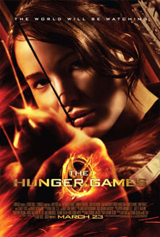
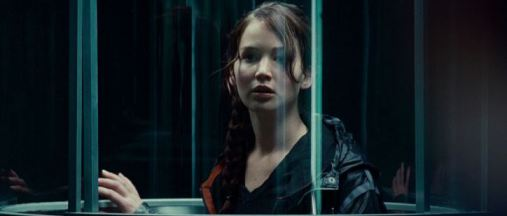

Review Hunger Games
Jum'at, 29 November 2013

Ketika pertama kali kabar bahwa trilogi novel The Hunger Games (2008 – 2010) karya Suzanne Collins akan diadaptasi ke layar lebar, banyak pihak yang mengharapkan bahwa versi film dari trilogi tersebut akan memiliki pengaruh komersial yang sama besarnya dengan versi adaptasi film dari The Twilight Saga (2005 – 2008) karya Stephanie Meyer. Tentu saja, harapan tersebut muncul karena kedua seri novel tersebut sama-sama menghadirkan kisah cinta segitiga yang biasanya dapat dengan mudah menarikj perhatian para penonton muda. Kisah romansa memang menjadi salah satu bagian penting dalam penceritaan The Hunger Games. Namun, kisah romansa tersebut hanyalah salah satu bagian kecil dari tema penceritaan The Hunger Games yang tersusun dari deretan kisah yang lebih kompleks, dewasa dan jauh lebih kelam dari apa yang dapat ditawarkan oleh The Twilight Saga.
The Hunger Games berkisah mengenai kehidupan sekelompok manusia di masa yang akan datang di sebuah negara yang bernama Panem. Panem merupakan sebuah negara yang terdiri dari 12 wilayah distrik yang berdiri di reruntuhan negara Amerika Serikat yang kini telah musnah keberadaannya. 12 wilayah distrik itu sendiri mewakili tingkat kesejahteraan setiap masyarakatnya, dengan para penduduk yang berada di wilayah District 12 merupakan para penduduk dengan kondisi kesejahteraan yang paling menyedihkan.70 tahun sebelumnya, para penduduk distrik tersebut sempat mengadakan perlawanan terhadap The Capitol, sebutan untuk sistem pemerintahan yang mengontrol masyarakat Panem secara otoriter. Sayangnya, perlawanan tersebut berakhir dengan kegagalan. Sebagai bentuk hukuman, setiap tahunnya The Capitol mengadakan The Hunger Games, dimana setiap distrik memilih satu remaja pria dan satu remaja perempuan sebagai tributes untuk saling bertarung untuk mempertahankan hidup mereka. The Hunger Games baru akan berakhir ketika kompetisi tersebut hanya menyisakan satu kontestan yang akan dinyatakan sebagai pemenang.

Berfokus pada penyelenggaran The Hunger Games ke-74, dikisahkan seorang remaja perempuan berusia 16 tahun, Katniss Everdeen (Jennifer Lawrence), mengajukan dirinya sebagai seorang tributes untuk menggantikan posisi adiknya, Prim (Willow Shields), yang sebenarnya terpilih untuk bertanding dalam kompetisi The Hunger Games. Bersama Katniss, terpilih pula seorang remaja pria bernama Peeta Mellark (Josh Hutcherson) yang akan mewakili District 12. Dengan didampingi oleh seorang escort dari The Capitol, Effie Trinket (Elizabeth Banks), seorang penata gaya, Cinna (Lenny Kravitz), dan mantan pemenang The Hunger Games yang kini akan menjadi pelatih Katniss dan Peeta, Haymitch Abernathy (Woody Harrelson), Katniss dan Peeta mulai mempersiapkan diri mereka untuk menghadapi 22tributes lainnya, mempertahankan hidup mereka sekaligus berusaha untuk memenangkan The Hunger Games.
Sebenarnya, adalah sulit untuk membayangkan bagaimana Gary Ross (Seabiscuit, 2003) akan menuturkan penceritaanThe Hunger Games yang cukup kelam tersebut agar mampu menjadi sebuah penceritaan yang dapat diterima oleh kalangan luas. Di luar kisah persahabatan dan percintaan yang terbentuk antara karakter Katniss, Peeta dan Gale (Liam Hemsworth), The Hunger Games memiliki tema kelam yang menyeruak di dalam jalan ceritanya, khususnya mengenai bagian kematian yang melibatkan bagian kisah mengenai sekelompok remaja – yang beberapa diantaranya merupakan karakter anak-anak – yang saling membunuh satu sama lain. Namun, Ross ternyata mampu menghantarkan kisah The Hunger Games dengan sangat baik. Dengan memperhalus berbagai adegan yang terkesan sadisme, namun sama sekali tidak pernah kehilangan esensi utama adegan tersebut, Ross menghadirkan The Hunger Games sebagai deretan kisah yang berjalan efektif, baik ketika sedang bercerita dengan nada drama maupun ketika sedang berada dalam penceritaan penuh adegan aksi.
Membedakan dirinya dari banyak kisah yang dipasarkan untuk penonton remaja, walaupun tetap hadir sebagai sebuah sajian hiburan, jalan cerita The Hunger Games dipenuhi dengan berbagai tema penceritaan mengenai kehidupan yang mampu secara efektif dihadirkan tanpa pernah memperlambat tempo penceritaan film ini. Keterlibatan langsung Suzanne Collins, yang menulis naskah cerita The Hunger Games bersama Ross dan Billy Ray (State of Play, 2009), sedikit banyak memberikan pengaruh pada pengawasan kualitas cerita dari versi film The Hunger Games. Walaupun pada beberapa bagian The Hunger Games terasa kurang mendapatkan pengembangan yang lebih kuat – khususnya pada karakterisasi beberapa tokoh yang hadir di dalam jalan cerita – yang membuat The Hunger Games kurang tereksplorasi secara emosional, namun secara keseluruhan, materi penceritaan The Hunger Games mampu tampil stabil dan kuat semenjak awal hingga film ini berakhir.
Hadir dengan fondasi penceritaan yang kuat, The Hunger Games tampil semakin kokoh dengan penampilan dari departemen akting serta tata produksi yang meyakinkan. Sangat sulit untuk memilih salah satu pengisi departemen akting The Hunger Games dan menyatakan mereka tidak mampu menghidupkan karakter mereka dengan baik. Di lini depan, Jennifer Lawrence mampu menghadirkan penampilan akting terbaiknya, memberikan kharisma yang luar biasa menarik sebagai seorang tokoh utama sekaligus menghasilkan chemistry yang erat antara dirinya dengan Josh Hutcherson dan Liam Hemsworth. Para pemeran pendukung film ini juga mampu menghadirkan penampilan akting mereka yang menarik. Karakter-karakter eksentrik seperti Haymitch Abernathy, Effie Trinket, Cinna, Caesar Flickerman dan Seneca Crane mampu dihidupkan secara cerdas oleh Woody Harrelson, Elizabeth Banks, Lenny Kravitz, Stanley Tucci dan Wes Bentley.
Secara visual, Ross mampu menginterpretasikan nada ceritanya melalui pewarnaan visual cerita yang ia hadirkan. Ketika mengisahkan latar belakang kehidupan karakter Katniss, Peeta dan seluruh penduduk distrik di negara Panem yang diwarnai kemiskinan, Ross memilih untuk menggambarkannya dengan warna kelabu yang bernuansa kelam. Visualisasi tersebut jelas kontras jika dibandingkan dengan pewarnaan yang cerah dan bervariasi ketika jalan cerita sedang dipusatkan di The Capitol atau dengan pewarnaan hijau yang dominan ketika kompetisi The Hunger Games sedang berlangsung. Efek khusus yang dihadirkan juga mampu tampil mumpuni, walaupun sulit untuk dikategorikan sebagai sebuah penampilan yang spesial.
Kelemahan terbesar yang dapat dirasakan dalam penceritaan The Hunger Games adalah kurang mampunya Gary Ross dalam menjaga alur intensitas cerita film ini. Banyaknya karakter pendukung yang hadir tanpa disertai latar belakang yang kuat juga seringkali membuat The Hunger Games terkesan kurang mampu untuk menjalin ikatan emosional yang kuat kepada para penontonnya. Yang terakhir, mungkin terletak pada pengeksekusian ending film ini yang berkesan terlalu klise dan kurang kuat. Pun begitu, tak satupun kelemahan tersebut akan mampu mengurangi kenikmatan dalam mengarungi kisah The Hunger Games. Hadir dengan penampilan akting para jajaran pemeran yang kuat, tata produksi yang apik serta jalinan kisah yang berjalan dengan rapi, The Hunger Games memulai perjalanan kisah triloginya dengan sangat mengesankan.